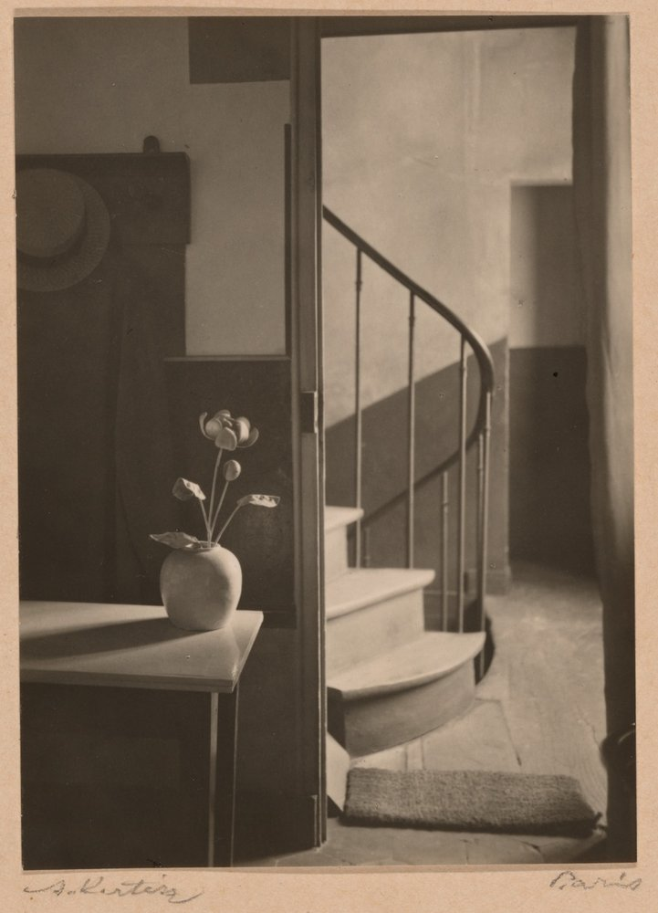

Chez Mondrian
André Kertész · 1926 · Gelatin silver print · 10.8 × 7.9 cm (image/paper) · Art Institute of Chicago
In copyright. Look and learn: shown for study, not for download.
Piet Mondrian invited André Kertész to his Paris studio in early 1926, a few months after the photographer had arrived from Hungary. The flower in the vase was artificial, and Mondrian had painted it to match the room. The boater on the rack belonged to Michel Seuphor, who had come along. The picture hung in Kertész's first exhibition in 1927 but was not published until 1943. This print is about eleven centimetres tall.